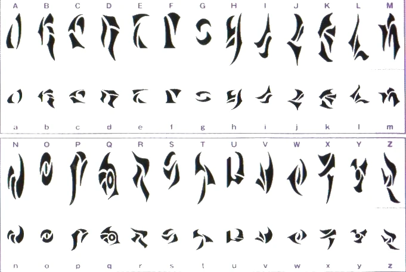

Al Bhed is a Final Fantasy X fictional language and a distinct, near-human race known for using forbidden machina technology. It serves as a secret language or substitution cipher for English (in the Western version), where letters are swapped to hide conversations from outsiders, adding depth to the game's world-building
Characteristics:
The Al Bhed have green eyes with spiral-shaped pupils. Regardless of skin color, all Al Bhed have blond hair (assuming they have hair). They are adept at swimming and holding their breath underwater, which serves them well during underwater excavations.
Al-Bhed Looks based on Final Fantasy X HD Remastered

Al-Bhed script founded spira
Language:
The Al-Bhed Language is just a changes letter like A in Latin equals Y in AlBhed Language, On the Game player will
able to decyper AlBhed language using Al Bhed Primers